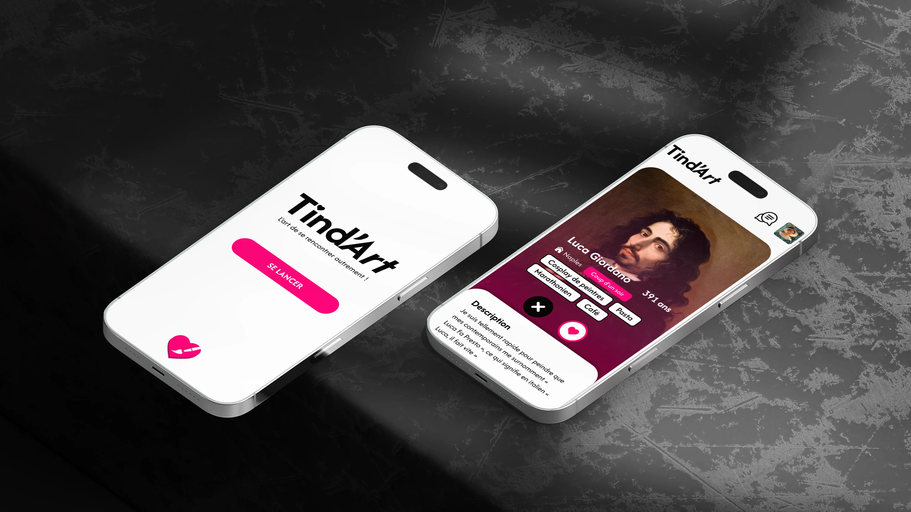
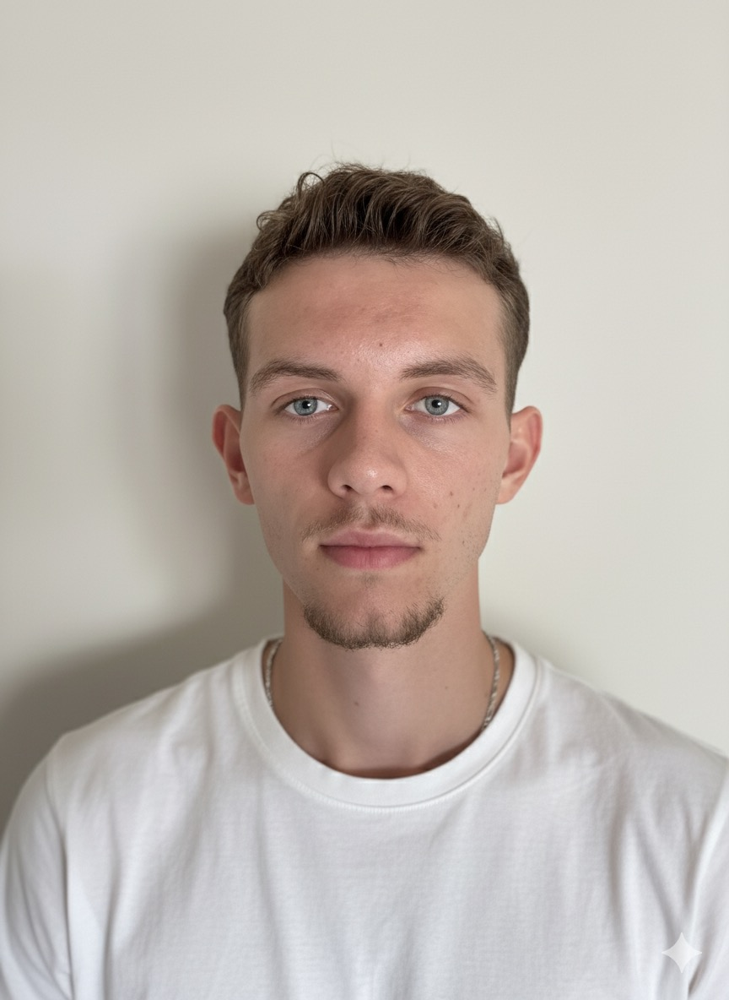
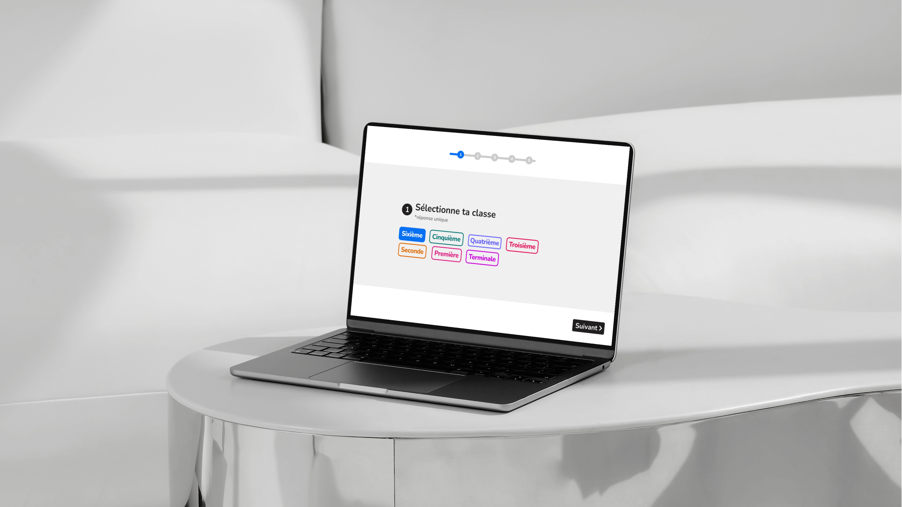
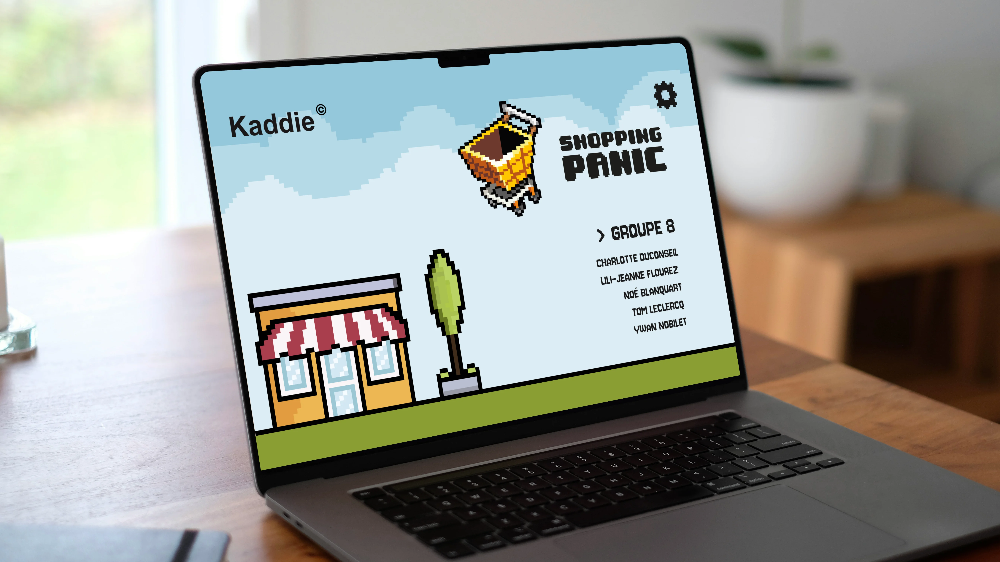
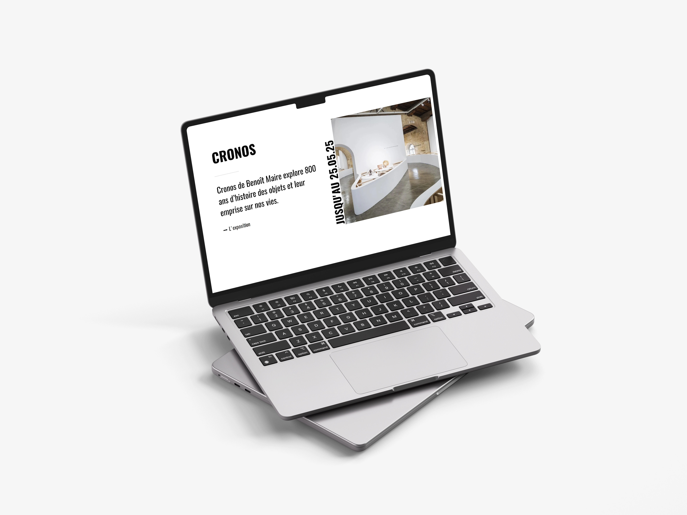
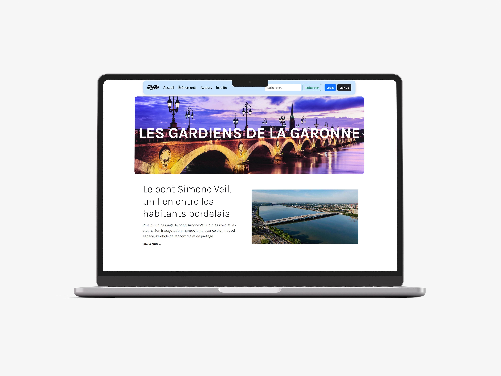
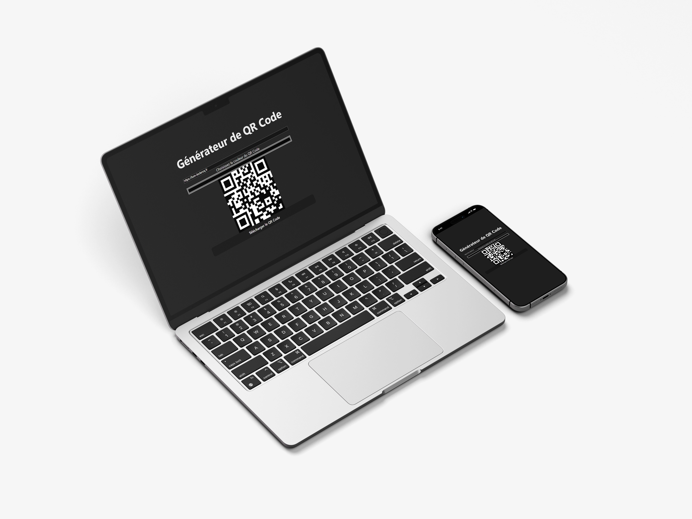
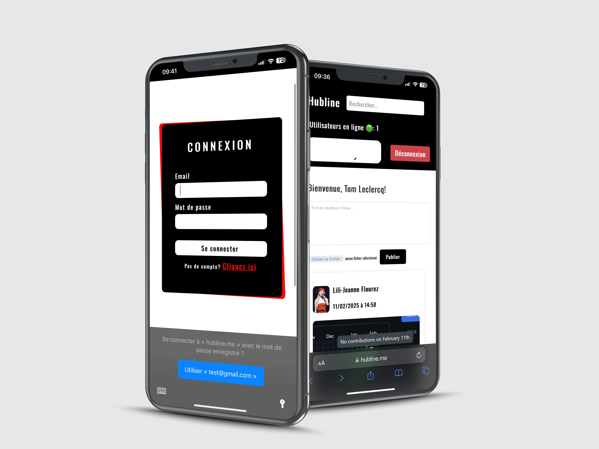

01 / 07↗Web design · équipe
Tind'Art
Un tinder artistique pour le musée des beaux-arts de Bordeaux, pensé pour faire découvrir les œuvres autrement.
- HTML
- CSS
- JS
Tom Leclercq — développeur fullstack et étudiant en BUT MMI. Je transforme les idées en interfaces sensibles, rapides et vivantes.
Je suis Tom, un développeur créatif qui aime autant comprendre comment les choses fonctionnent que leur donner une vraie personnalité.
Passionné par la résolution de problèmes et le développement web, j'ai suivi un parcours orienté vers le numérique depuis mon bac STI2D. Mon cursus en BUT MMI a renforcé mes compétences front-end et back-end, tout en laissant de la place à mon côté créatif.
Je suis actuellement en alternance chez Couach et toujours curieux de découvrir de nouveaux terrains de jeu.

TOM LECLERCQ
01 / 07↗Web design · équipe
Un tinder artistique pour le musée des beaux-arts de Bordeaux, pensé pour faire découvrir les œuvres autrement.

02 / 07↗UX / UI · prototype
Une expérience d'onboarding pour personnaliser l'apprentissage par l'élève.

03 / 07↗Game design · Unity
Un jeu où il faut récolter un maximum d'objets dans un temps limité.

04 / 07↗Direction artistique · web
Refonte immersive du site du musée d'art contemporain de Bordeaux.

05 / 07↗Développement · back-end
Un blog d'articles en PHP permettant de partager et commenter des contenus.

06 / 07↗Open source · outil
Un générateur de QR-Codes personnalisables et téléchargeables.

07 / 07↗Produit numérique · social
Un réseau social pour connecter les étudiants, partager des ressources et collaborer.
Des outils pour passer de l'idée au produit, avec toujours une attention particulière portée au détail.
HTML / CSS · JavaScript · PHP · Python · SQL · C# · Bash · Ruby on Rails
Laravel · React · Tailwind CSS · Bootstrap · GSAP · Selenium
Git / GitHub · Figma · MySQL / MariaDB · Linux · VS Code · SSH · API REST
Actuellement en alternance chez Couach
Ouvert à de nouvelles
opportunités